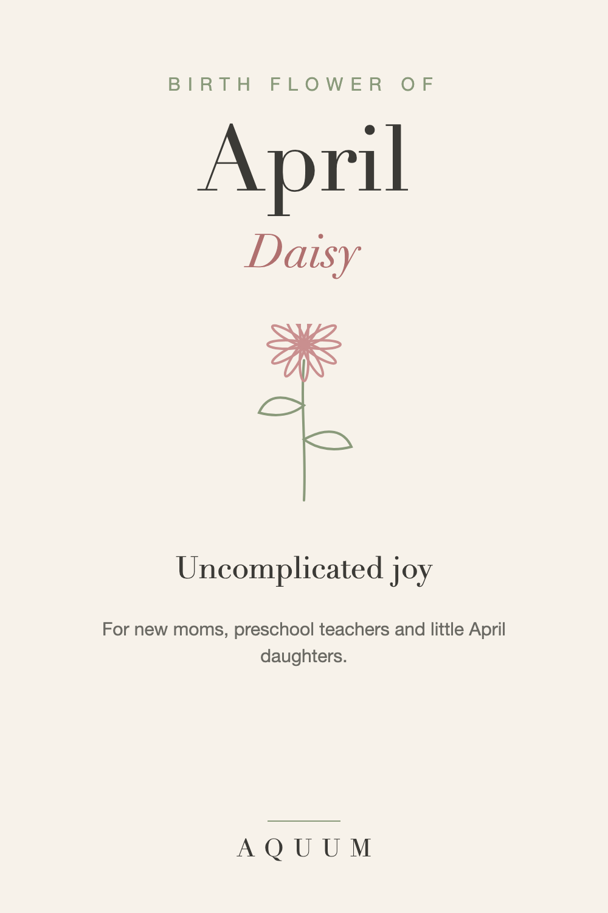

April Birth Flower: Daisy Meaning and Gift Ideas
2026-09-30
This article may contain affiliate links. How that works.

April's birth flowers are the daisy and the sweet pea. Both are cheerful, unfussy flowers, and their meanings match.
What the daisy means
The daisy stands for innocence and uncomplicated joy. Its simple shape, a ring of white petals around a yellow center, is one of the first flowers children learn to draw, and it keeps that sense of lightness.
The sweet pea, April's second flower
The sweet pea means blissful pleasure, and in the Victorian language of flowers it also meant "thank you for a lovely time." That makes it a lovely goodbye or thank-you flower.
Who the daisy suits
- A new mom, or a mom-to-be with an April due date
- Preschool and kindergarten teachers
- Little girls born in April, and the grandparents who adore them
April and Mother's Day
April sits just before Mother's Day in May. A daisy gift works for both: a birthday gift for an April mom, or an early nod to Mother's Day that doesn't say so directly.
April birth flower gift ideas
- A daisy shirt, mug or tote, bright and easy to wear.
- Sweet pea seeds, which grow fast and smell wonderful.
- A thank-you card with the sweet pea's meaning, for a teacher at the end of the year.
For a baby born in any month, see our birth flower gifts for new moms.